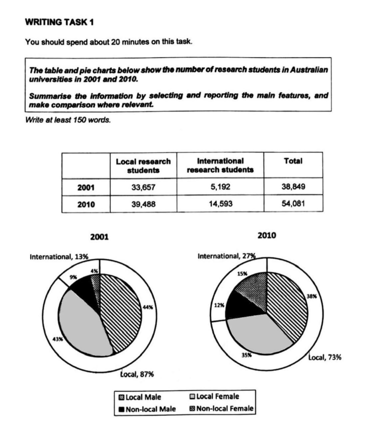

Article
Read the article, then confirm below to continue.
Too hot to handle?
The Olympic Games in Paris may be the hottest yet, creating a dangerous environment for competitors, says Madeleine Orr.
📄 Open articleComprehension & vocab
Questions on the article you just read, plus ten key words from it.
Comprehension
1. According to the article, why is Paris described as a "heat island"?
2. According to the article, what mainly allows the body to cool itself during exercise?
3. According to the article, what can happen if cooling interventions aren't provided and body temperature keeps rising?
4. According to the article, what does the "Rings of Fire" report highlight?
5. According to the article, why does the author believe it's unlikely an athlete will die at these Olympics?
6. According to the article, what does the author say worries her most about the conditions at these games?
Vocabulary
Writing Task 1: the article
Background reading on postgraduate research demographics — study the highlighted language before you write.
■ subject synonyms ■ useful Task 1 chunks
Academic Expansion and Demographic Realignment in Postgraduate Research Systems
Longitudinal analysis of postgraduate research enrollments across higher education systems reveals structural growth alongside shifts in domestic and international candidate demographics. Over a multi-year operational period, total research degree enrollments expand significantly, driven primarily by an acceleration in international candidate recruitment and changing gender ratios across domestic and overseas cohorts.
Enrollment Volatility and Demographic Realignment
Key operational metrics demonstrate notable shifts in demographic makeup and candidate origins:
International Candidate Acceleration: Overall growth in research degree enrollment is heavily propelled by the international sector. Overseas candidate admissions undergo near-threefold expansion over the period, significantly outstripping the steady, incremental growth observed among domestic research scholars.
Proportional Realignment of Market Share: Domestic scholars maintain a majority share of total postgraduate research seats, though their overall proportional dominance contracts. Simultaneously, foreign candidates capture a substantially larger percentage of total postgraduate placements, reflecting global institutional recruiting campaigns.
Gender Parity Convergence Among Domestic Scholars: Early enrollment cycles reflect absolute parity between male and female domestic scholars. Over time, however, both male and female domestic proportions experience a minor relative decline as international cohorts expand, with female domestic enrollment contracting at a slightly faster rate.
Gender Distribution Dynamics in Foreign Mobility: International enrollments display notable expansion across both gender categories. While non-local male candidates initially make up the vast majority of foreign scholars, non-local female enrollment registers significant growth, nearly quadrupling its proportional footprint by the conclusion of the observation period.
Comparative Matrix: Student Origin and Gender Distribution Metrics
| Demographic Category | Baseline Period Share | Comparative Period Share | Structural Growth Trajectory |
|---|---|---|---|
| Domestic Male Researchers | Dominant Individual Share | Moderate Majority Share | Maintains strong baseline volumes despite relative proportional compression. |
| Domestic Female Researchers | Near-Equal Secondary Share | Substantial Minority Share | Undergoes minor relative share contraction as international mobility expands. |
| Non-Local Male Researchers | Small Minority Share | Double-Digit Representation | Steady growth driven by global academic mobility and institutional recruitment. |
| Non-Local Female Researchers | Marginal Initial Share | Multi-Fold Expansion | Highest relative rate of expansion, closing the gender gap within foreign cohorts. |
| Total Enrollment Infrastructure | Baseline System Capacity | Expanded System Capacity | Robust overall volume expansion across public research universities. |
Task 1 report
Mini exam block — write your response with the stopwatch running.
The table and pie charts below show the number of research students in Australian universities in 2001 and 2010. Summarise the information by selecting and reporting the main features, and make comparisons where relevant. Write at least 150 words.

Sample answer
Model response, with useful comparison language marked.
The table and pie charts illustrate the number and gender distribution of research students in Australian universities in 2001 and 2010, classified by residency status.
Overall, the total number of students increased significantly, primarily driven by the rise in international enrollments. While local students continued to form the majority, the gender balance among international students improved by 2010, primarily due to an increase in international female participation.
In 2001, there were a total of 38,849 research students, with local students accounting for the vast majority. By 2010, this figure had grown to 54,081, primarily due to a nearly threefold increase in international research students — from 5,192 to 14,593 — while local enrollments rose more modestly.
In terms of gender, the group of local students was almost balanced in 2001, with males and females constituting 44% and 43%, respectively. By 2010, this balance had also extended to international students, resulting from a substantial increase in the proportion of international female students (from 4% to 15%). While the proportion of local males declined by 6 percentage points, that of international males rose markedly to 12%.
Reading Practice
Open the test in a new tab, complete it, then come back here.
Speaking Part 2 & 3
Choose a topic set below. You only get one attempt per question, so make sure you're ready before you start recording.
Video & comprehension
Watch, then answer the questions below.
1. According to the video, why is soil described as one of the planet's most underrated wonders?
2. What is remarkable about the number of microorganisms in soil?
3. How have microorganisms contributed to human medicine?
4. Why did Charles Darwin consider earthworms important?
5. How do fungi and plants benefit from their relationship?
6. Why does the video suggest that soil needs protection?
7. Which of the following is mentioned as a way soil can be damaged?
8. What important role does soil play in relation to climate change?
9. According to the video, what is one major problem caused by intensive farming?
10. What is the main message of the video?
Gap Fill
Word box: microorganisms · antibiotics · evolutionary · compounds · sustaining · intricate · thrive · nutrients · ecosystem · erosion · contamination · ancient · carbon · intensive · regulated
1. A single gram of soil may contain thousands of species of microscopic organisms, also known as .
2. Some substances produced by soil organisms form the basis of many used by humans.
3. Millions of years of competition have encouraged microorganisms to develop ways to fight their neighbours.
4. Microorganisms can produce chemical that may have important medical uses.
5. Earthworms play an important role in making and healthy soil.
6. Underground, fungi form vast and webs of fungal threads.
7. Plants and fungi depend on each other in order to .
8. Fungi provide plants with important , such as nitrogen and phosphorus.
9. Soil is part of an interconnected in which different organisms depend on one another.
10. Soil can be destroyed by natural processes such as landslides and .
11. Chemical is another serious threat to the health of soil.
12. Some soil is extremely , dating back millions or even billions of years.
13. Soil is a valuable store because it captures and locks away carbon underground.
14. farming is one of the major causes of soil degradation.
15. In many countries, soil is poorly protected and .
Vocabulary Matching
Day 24 complete! 🎉
All 8 tasks done. Come back tomorrow for the next day.